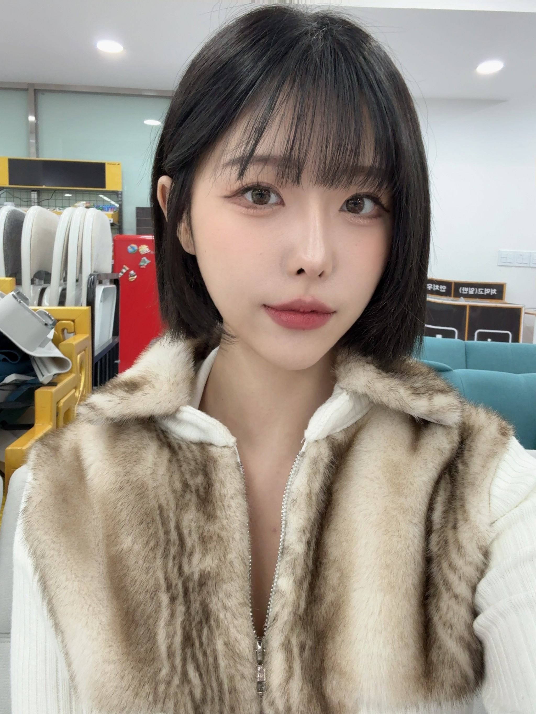
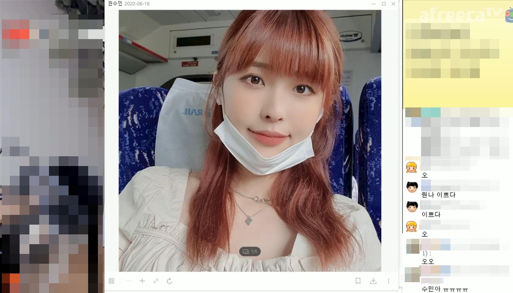
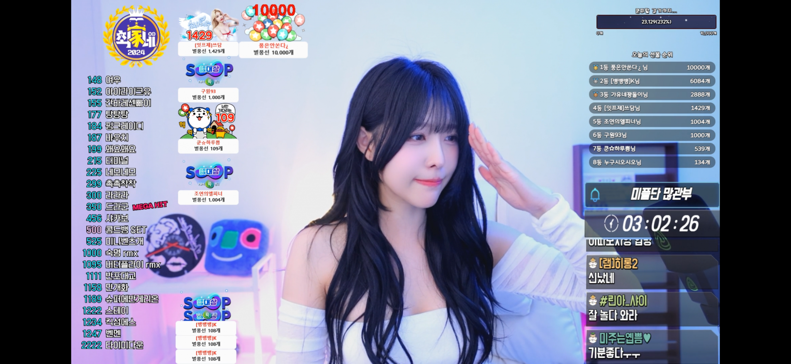
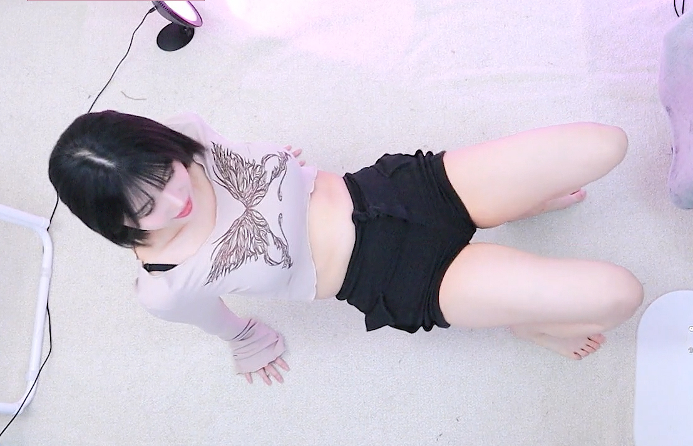

다음은 SOOP 스트리머 ‘미주’의 인터뷰 전문이다.
▶ SOOP 스트리머 미주에 대한 간략한 소개 부탁드립니다.
안녕하세요. 지난 2022년 4월 다른 플랫폼에서 방송을 시작해 현재는 방송한 지 4년차가 된 SOOP 스트리머 미주입니다.
처음에는 대구에서 방송을 시작해 서울 인근으로 상경하고 이후 다시 대구에서 생활하다가 현재는 서울에 거주 중입니다. 현재 최가네 크루에서 활동 중으로 스포츠 분야로 새롭게 도전에 나서고 있습니다.


시청자 외모 대결 컨텐츠서 2위를 차지한 일반인 시절 권수민
▶ 방송을 처음 시작한 계기와 SOOP은 언제 접하게 됐는지.
NBTI가 극 E로 어릴 때부터 텐션이 높다는 이야기를 자주 들었고, 이 열정을 어디에 풀 곳이 없어 가족이나 주변인 추천을 받아 방송을 시작하게 됐다.
2020년 초 트위치에서 몇개월간 방송을 하기도 했으나 본격적으로 방송을 시작한 것은 2022년이다.
SOOP은 아프리카TV 시절인 2020년 모 비제이 시청자 외모 대결 컨텐츠에 참여한 것으로 처음 접하게 됐으며, 당시 많은 분이 사랑해주신 결과 최종 2위로 마무리 지었다.
▶ 평소 이미지가 강하다는 말도 있던데 실제는 어떤지.
방송 초기에는 대구 출신으로 사투리까지 쓰다 보니 그런 이미지가 있었던 것 같다. 게다가 학창시절 경찰을 꿈꾸거나 육상 선수(중거리)로 활동하다 보니 더욱 그런 것 같다.
그러나 학창시절 학생회와 대학교 홍보대사, 조교까지 활동하는 등 책임감이 강하며, 애니메이션(만화)을 보는 것도 좋아한다.
특히, 동물들을 좋아하며 그렇다 보니 현재 집에는 강아지 첫째 베티와 둘째 베베를 키우고 있으며, 본집에는 고양이 4마리(랑이, 아이, 마오, 마리)를 키우고 있다.
또한, 비흡연자에 술을 좋아하기보다는 술자리를 좋아하고, 이기적인 사람보다는 다정하고 재밌는 사람을 좋아한다. 과거에는 NBTI가 F였다가 현재는 T로 바뀌었는데 다시 F가 되어 가는 것 같기도 하다.
▶ 1000일간 방송하면서 기억나는 순간은 있는지
여러 방송인과 함께 한 순간들이 모두가 기억에 남는다. 방송 1주년을 기념했던 방송이나 엑셀 크루에서 활동할 당시 비친소와 팀대전 등에서 드라군 리액션을 흐름으로 1등을 달성한 것도 좋은 기억으로 남아 있다.

한달간 별풍선 40만개를 달성한 스트리머 미주
최근에는 2개월째 보내고 있는 최가네 크루 내에서 활동했던 모든 순간들과 얼마전에 있었던 눈물의 술 방송도 창피한 기억으로 떠오른다. 앞으로도 최가네에서 나만의 컨텐츠를 진행하는 등 시청자들과 좋은 추억으로 만들어가고 싶다.
▶ 2025년을 맞아 이루고 싶은 목표는 무엇인지
2024년 12월 한달간 별풍선 40만개를 목표로 열심히 활동해왔고 2025년에도 꾸준히 유지하고 싶은 것이 작은 바람이자 목표다.
우선은 대표님에게 빌린 400만원 청산을 최우선으로 목표를 세웠고 이미 첫번째 목표를 이룬 상태이다.
또한, 중학생부터 만성 위염을 달고 살았는데 몇일전 수면 위 내시경을 받은 바 있다. 나름 강해 보이지만 허약한 체질로 올해는 건강도 챙기면서 열심히 활동하고 싶다.
아울러, 스포츠 분야로 올해 SOOP 시상식에서 수상한 것이 나의 올해 최대 목표로 1월부터 스포츠를 주제로 한 나만의 컨텐츠를 만들어 갈 예정이다.

개인방송서 드라군 리액션을 하고 있는 권미주
“왜 스포츠 분야로 결정했냐”는 물음에 토크&캠방보다 경쟁력이 적어 결정한 이유도 있으나 내가 잘하는 분야가 스포츠이기도 하고 예전부터 키우고 싶은 분야이기도 하다.
▶ 마지막으로 하고 싶은 이야기는
사실 나는 컨텐츠 제작보다는 보조를 잘하는 사람으로 알고 있다. 그렇다 보니 ‘크루 내에서 내가 필요한가’는 생각이 들며 ‘더욱 열심히 해야 한다’는 조급함도 있었다.
그러나 대표님이나 주변에서 ‘너는 잘하고 있다. 기죽지 말고 파이팅하자’는 말을 듣고 더욱 열심히 하자는 목표가 생기고 있다. 그렇다 보니 새해 초부터 여러 개인 컨텐츠를 구상 중이다.
수년간 어느 결정이나 위치에 있던 함께 응원하고 좋아해 준 모든 팬에게 감사의 말을 전하며, 비록 방송한 지 1000일이 지났지만, 아직 방송에 대해 잘 모르는 방린이로 기죽지 말고 파이팅하는 스트리머가 되도록 노력하겠다.